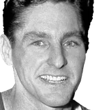

Played 2 seasons for 2 teams; his teams went 4–4 in his games.
Final NBA finish, season by season
Title Finals Other playoffs Missed. #1 = champion; the dashed line is last place that season. Each point opens that season's final standings.
All 10 teams ranked in 1952-53, his best finish (#3)Teammate help
- Ed Macauley5.01 season
 Bob Cousy5.01 season
Bob Cousy5.01 season
Bill Sharman4.01 season
Career
Regular seasons 1946-47 to 2026-27, games through Nov. 17, 2026. Records include 2026-27 to date; season counts and finishes use completed seasons. Each card opens its board. How we count.
Latest completed seasons
- 1953-54 Baltimore Bullets: #9 of 9, 16–56 · Missed
- 1952-53
 Boston Celtics: #3 of 10, 46–25 · Lost conf finals 1–3
Boston Celtics: #3 of 10, 46–25 · Lost conf finals 1–3  NYK
NYK
Season by season
Newest first; every header sorts. Final NBA finish is the team's rank among all teams that season (#1 = champion) and opens that season's standings. "Without him" uses the team-season window; the span line counts only the games between his first and last game for the team.
| 1953-54 | Baltimore Bullets5th Eastern | #9 of 9 | 16–56 22.2% | Missed | 2 of 72 | 0–2 0.0% | 16–53 23.2%span: N/A, gap N/A | −23.2 |
| 1952-53 | #3 of 10 | 46–25 64.8% | Lost conf finals 1–3 | 6 of 71 | 4–2 66.7% | 42–23 64.6%span: 5–0, gap −33.3 | +2.1 |
Teammate help by season
Help = Teammates Score points for honors won that season by teammates who shared a game with him. How help works.
- 1953-54Baltimore Bullets
Ray Felix All-StarROY2 g
Entering help and the other teammates
Entering the season: 1.0 · from Leo Barnhorst (1.0)
No honors that season: Max Zaslofsky 2 g, Mark Workman 2 g, Hal Uplinger 2 g, Al Roges 2 g, Bob Peterson 2 g, Eddie Miller 2 g, Paul Hoffman 2 g, Rollen Hans 2 g, Leo Barnhorst 2 g
- 1952-53Boston Celtics
Ed Macauley All-NBA 1stAll-Star6 gBob Cousy All-NBA 1stAll-Star6 gBill Sharman All-NBA 2ndAll-Star6 g
Entering help and the other teammates
Entering the season: 10.0
No honors that season: John Mahnken 6 g, Bob Harris 6 g, Bob Donham 6 g, Chuck Cooper 6 g, Bob Brannum 6 g, Kenny Rollins 5 g
Compare with a peer
Suggested peers need 300+ career games. Pick anyone below.
Record against each opponent
Regular season, completed seasons: 8 games, 4–4, against 5 franchises. Grouped by franchise (named as today); game lists keep each team's name that season.
| Games list | |||||||
|---|---|---|---|---|---|---|---|
| 3 | 0–3 | 0.0% | −3 | N/A | 1952-53 to 1953-54 | ||
| 2 | 2–0 | 100.0% | +2 | N/A | 1952-53 | ||
| Baltimore BulletsMost-faced: Jim Baechtold (1 games) · Head-to-Head | 1 | 1–0 | 100.0% | +1 | N/A | 1952-53 | |
| 1 | 1–0 | 100.0% | +1 | N/A | 1952-53 | ||
| 1 | 0–1 | 0.0% | −1 | 1–0 (1–0 in games) | 1952-53 |
Rows add up to his career record in his games. A playoff series counts when he played in it; early round-robin games show as games only. How we count.
Playoffs, with and without him
| 1952-53 | Lost conference finals to | #3 of 10 | 4 of 6 | 2–2 50.0% | 1–1 50.0% | 0.0 |
Arrival and departure
Team wins per 82 games the season before he arrived vs his first season there, and his last season vs the season after he left. Per 82 so short seasons compare fairly. These are team records, not a measure of what he did.
| Arrived | Baltimore Bullets | 1953-54 | 1952-53: 15–55 17.6 per 82 | 1953-54: 16–56 18.2 per 82 | +0.7 wins |
| Left | 1953-54 | 1952-53: 46–25 53.1 per 82 | 1953-54: 42–30 47.8 per 82 | −5.3 wins | |
| Arrived | 1952-53 | 1951-52: 39–27 48.5 per 82 | 1952-53: 46–25 53.1 per 82 | +4.7 wins |